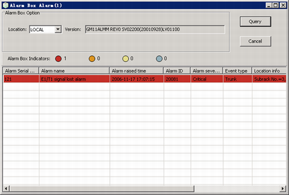
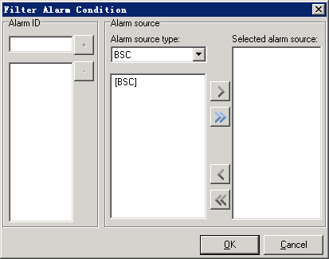

This describes how to query the version information of the alarm box and the active alarms reported by the alarm box.
Prerequisites
- The LMT runs normally.
- The communication between the LMT and the BSC is normal.
- The communication between the LMT and the alarm box is normal.
- The alarm box is correctly connected.
- The convert management system runs normally.
Context
The alarm box is connected to the LMT PC, M2000, or server.
If the alarms are from the BSC and BTS, you can query the BSC and BTS alarms at the same time or query the alarms by setting filter conditions.
Procedure
- Through GUI
- Choose .
- In the Alarm Box Option area, set Location. Click Query. The query results are displayed, as shown in Figure 1.
Figure 1 Querying alarm box information
- Right-click the alarm to be queried, and then choose Filter Alarm Condition from the shortcut menu. A dialog box is displayed, as shown in Figure 2.
Figure 2 Filter Alarm Condition dialog box
- Set parameters in Alarm ID and Alarm Source areas. Click OK. The alarm box information is displayed according to the filter conditions.
- Through MML
- Run the LST BOXVER command on the LMT to query the version number of the alarm box.
- Run the LST BOXALM command on the Local Maintenance Terminal to query the active alarms reported by the alarm box.
Postrequisites
As shown in Figure 1, the shortcut menu also provides the following options:
- Save All Alarms: Save all the queried alarm box information.
- Save Selected Alarms: Save the selected alarm box information.
- Set Show Columns: Set the alarm information to be displayed.
- Alarm Details: View detailed information about the alarm.
Copyright © Huawei Technologies Co., Ltd.